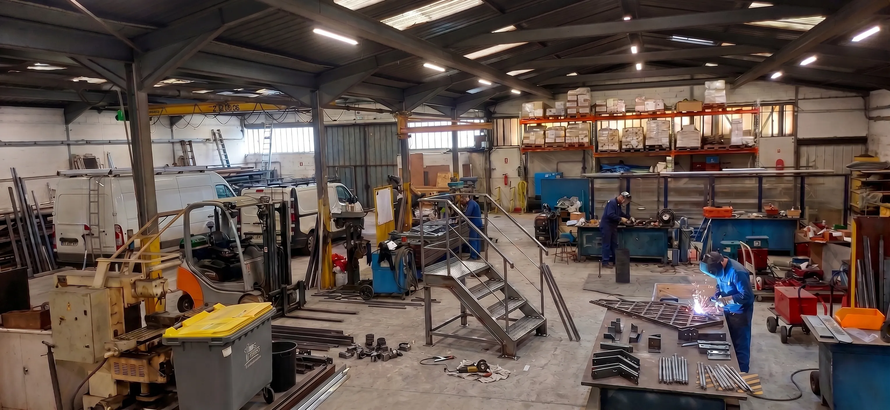

Sur mesure
Chaque rampe est pensée selon l'ouvrage existant, les longueurs, les fixations et les interfaces terrain.
L'entreprise
Depuis 1991, ERRM conçoit, fabrique et installe des ouvrages métalliques sur mesure. Ce savoir-faire est aujourd'hui mobilisé pour des mains courantes lumineuses adaptées aux escaliers, passerelles, accès publics, sites industriels et cheminements nocturnes.
Notre histoire
Fondée à Villers-Cotterêts, ERRM s'est développée autour d'une idée simple: maîtriser l'étude, la fabrication et la pose pour livrer des ouvrages fiables, adaptés aux contraintes réelles du site.
L'entreprise intervient historiquement en chaudronnerie, tuyauterie, métallerie, serrurerie, charpente métallique et maintenance industrielle. Cette polyvalence permet d'aborder une main courante lumineuse comme un ouvrage complet: structure, finition, intégration lumineuse, maintenance et pose.

Ce qui nous définit
Chaque rampe est pensée selon l'ouvrage existant, les longueurs, les fixations et les interfaces terrain.
Une fabrication inox et des assemblages conçus pour les sites exposés, fréquentés et soumis à l'usage intensif.
Des interventions préparées pour limiter l'impact sur l'activité du site et les zones de passage.

Moyens internes
Les éléments sont préparés à l'atelier pour fiabiliser la pose sur site: découpe, soudure, ajustage, polissage, pré-assemblage et contrôle des interfaces. Sur un site très fréquenté, ce travail en amont réduit les aléas de chantier.
Parcours
Création d'ERRM autour des études et réalisations métalliques pour les professionnels.
Intégration d'un atelier pour fabriquer les équipements conçus par le bureau d'études.
Développement des activités de maintenance industrielle et d'intervention sur site.
Déploiement d'une offre dédiée aux mains courantes lumineuses pour accès publics, professionnels et industriels.
Échange technique
ERRM peut étudier une main courante lumineuse neuve ou l'adaptation d'un ouvrage existant.